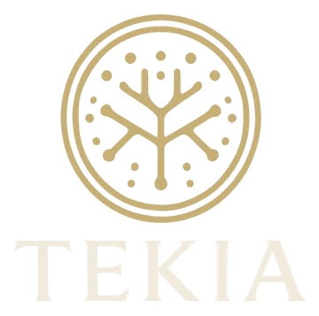

Antes de considerarlo
Precauciones. [pendientes de revisión] Si estás embarazada, lactando o tomas medicamentos, consúltalo antes con tu médico.

Hay curiosidades que echan raíces. La tuya te ha traído hasta los hongos funcionales.

Mi blend · Tu selección
Tu pedido está vacío. Arma tu blend o elige una de las cuatro mezclas.
¿Tienes dudas antes de elegir? Escríbenos. Te ayudamos a entender tus opciones.
Este acompañamiento no sustituye la consulta con un profesional de la salud.